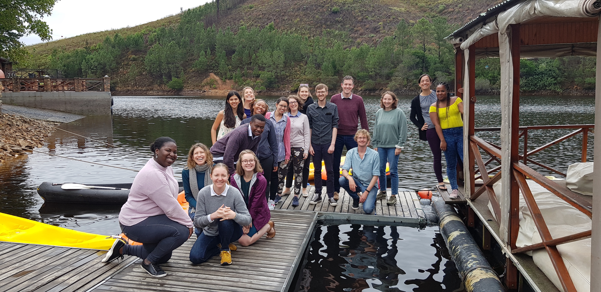

Contact J-PAL Africa
J-PAL Africa was established in August 2010 at the Southern Africa Labour & Development Research Unit (SALDRU) at the University of Cape Town, South Africa, with support from The William and Flora Hewlett Foundation. J-PAL Africa has a satellite office in Johannesburg.

University of Cape Town
Email: [email protected]
Private Bag X3 Rondebosch 7701
Cape Town
South Africa
+27 21 650 5981
Get directions (Google maps)
J-PAL Africa: Johannesburg office
Email: [email protected]
3 Eton Road, Parktown
Johannesburg
South Africa
Get directions (Google maps)
Follow us on Twitter, or sign up for our jobs notifications.